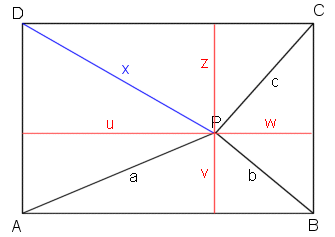

Lösung Puzzle 30: Entfernung eines Baumes
Lösung: x2 = a2 + c2 - b2

a) Gemäss Pythagoras gilt: Bezeichnungen siehe Figur:
a2 = u2 + v2 (1)
b2 = v2 + w2 (2)
c2 = w2 + z2 (3)
x2 = u2 + z2 (4)
Addiert man Gleichung (1) und Gleichung (3), so erkennt man: a2 + c2 = u2 + v2 + w2 + z2
Wegen Gleichungen (2) und (4) folgt daher: a2 + c2 = x2 + b2
Also gilt: x2 = a2 + c2 - b2
b) Natürliche Zahl als Lösung für x
Einiges Probieren (oder ein kleines Computerprogramm) liefert z.B. die Werte a = 9, b = 6 und c = 2, die Lösung x = 7 und damit alle Vielfachen davon, also zum Beispiel
a = 180, b = 120, c = 40 und x = 140 (in Metern).
Es gibt noch viele andere Lösungen, z.B. a = 7, b = 1 und c = 4, die Lösung x = 8.
©1997 - 2026 www.mathematik.ch |🔍